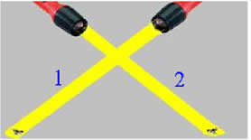
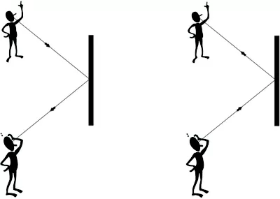

Sumário
Princípios da Óptica Geométrica
Introdução
Existem 3 princípios da óptica geométrica, são eles: Princípio da Independência,
Princípio da Reversibilidade e Princípio da Propagação Retilínea.
Mas calma que a gente vai falar deles um por um.
-
Princípio da Independência: Basicamente esse princípio indica que dois raios de luz podem se cruzar que não
afetará seu caminho inicial. Ou seja, cada um segue seu caminho e nenhum se altera. Podemos observar isso na imagem abaixo:

Feixes de luz independentes - Link da imagem
-
Princípio da Reversibilidade: Nesse princípio é mostrado que o caminho feito pelos raios luminosos pode ser
feito na ida e na volta, logo, o raio volta pelo mesmo caminho que vai. Como podemos ver na imagem abaixo:

Princípio da Reversibilidade nos raios de luz - Link da imagem
- Princípio da Propagação Retilínea: Esse princípio explica que em meios translúcidos (objetos em que a luz passa, porém sem nitidez) e transparentes(ar, vidro, a luz passa completamente) os raios de luz sempre são retilíneos.
RESUMÃO
Chegou a hora de fazer o Resumão! Para isso, aqui vão algumas dicas para você fazer o seu de forma completa e saber tudo sobre os conceitos do Espectro Eletromagnético:
- Sabe quando você olha para uma pessoa no reflexo do espelho? Então, ela também consegue te ver, isso é o Princípio da Reversibilidade.
- As projeções antigamente feitas em câmaras escuras só eram possíveis devido ao princípio de propagação retilínea.
- Já percebeu quando dois canhões de luz, um verde e outro amarelo, cruzam seus raios nem as cores nem o rumo da luz se alteram? Então, isso é devido ao princípio de Independência.
- É bem simples você lembrar desses princípios, você pode criar histórias para se lembrar , ou apenas exemplos práticos, como os citados acima.
Refêrencias